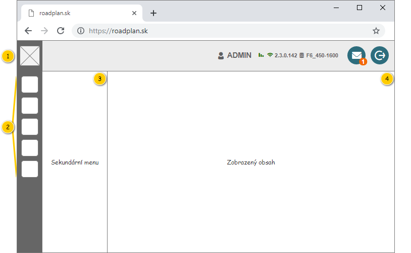

ROZPRACOVÁNO!
Hlavní menu slouží k přepínání mezi jednotlivými moduly v rámci aplikace. Zobrazení konkrétních položek primárního i sekundárního menu je podmíněno uživatelskými právy, které jsou uvedeny u konkrétních případů užití.

| Callout | Skupina | Popis |
|---|---|---|
| 1 | Logo aplikace | Logo aplikace může být nastaveno 2 způsoby:
Logo aplikace je tvořeno ikonou. |
| 2 | Primární menu | Menu pro seskupení větších funkční celků, kterou jsou tvořeny dílčími případy užití. Může být ale použito i pro jednotlivé případy užití, které jsou v rámci aplikace stěžejní. Položka primárního menu je tvořena pomocí ToggleButton, aktivní modul má pak toto tlačítko ve stavu „zapnuto“. |
| 3 | Sekundární menu | Menu pro jednotlivé dílčí případy užití. Jeho struktura je popsána dále – viz Sekundární menu. |
| 4 | Zobrazený obsah | Prostor pro zobrazení uživatelského rozhraní zvoleného případu užití. |
Poznámka: Barva panelu obsahující logo aplikace a primární menu může být nastavena 2 způsoby:
TODO
Dále je uvedena struktura menu s odkazy na konkrétní případy užití – viz tabulka. Pořadí jednotlivých položek odpovídá pořadí v rámci tabulky.
| Primární menu | Sekundární menu | Položka menu | Spuštěný případ užití |
|---|---|---|---|
Objednávky
| – | – | |
Šablony objednávek
| – | – | |
Objednané služby
| – | – | |
Denní výkony
| – | – | |
Plánování denních výkonů
| – | – | 206UC01: Zobrazit obrazovku plánování denních výkonů, na vstup jsou předány následující informace:
Na vstupu nejsou předány žádné hodnoty, nastavení bude vycházet z uživatelského nastavení. |
Časové využití denních výkonů
| Časové využití vozidel
| Vozidlo za období | |
| Vozidla za den | |||
| Vozidla za období | |||
| Vozidlo za rok | |||
| Vozidla za měsíc | |||
Monitoring realizace denních výkonů
| – | – | 300UC01: Zobrazit obrazovku monitoringu realizace |
Dispečerská plachta
| – | – | , na vstup jsou předány následující informace:
Na vstupu nejsou předány žádné hodnoty, nastavení bude vycházet z uživatelského nastavení. |
FLWW2
| – | – | |
Správa systému
| Správa zákazníků
| Zákazníci | |
| Rámcové smlouvy | |||
Číselníky
| Provozovny | ||
| Likvidační místa | |||
| Typy nádob | |||
O aplikaci
| – | – | 703UC01: Zobrazit stránku O aplikaci (poznámka: není implementováno) |
| Odkaz | Stručný popis změny/doplnění |
|---|---|
| Struktura menu | Revize volaného UC pro modul Plánování denních výkonů (naznačeno modře). |
| Odkaz | Stručný popis změny/doplnění |
|---|---|
| Struktura menu | Doplněna položka menu pro Dispečerskou plachtu (naznačeno modře). |
| Odkaz | Stručný popis změny/doplnění |
|---|---|
| Struktura menu | Doplněna položka menu pro Denní výkony. |
| Odkaz | Stručný popis změny/doplnění |
|---|---|
| Struktura menu | Doplněny obecné položky: FLWW2, O aplikaci. Změna pořadí: Správa systému. |
| Odkaz | Stručný popis změny/doplnění |
|---|---|
| Struktura menu | Doplněna položka menu pro M7. |